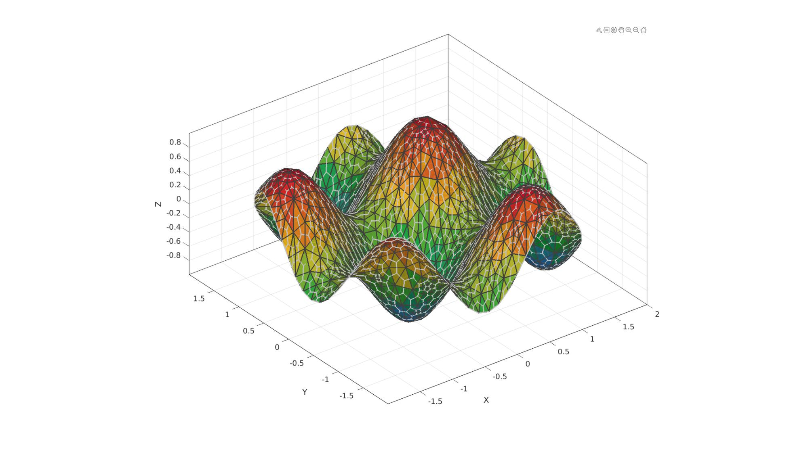
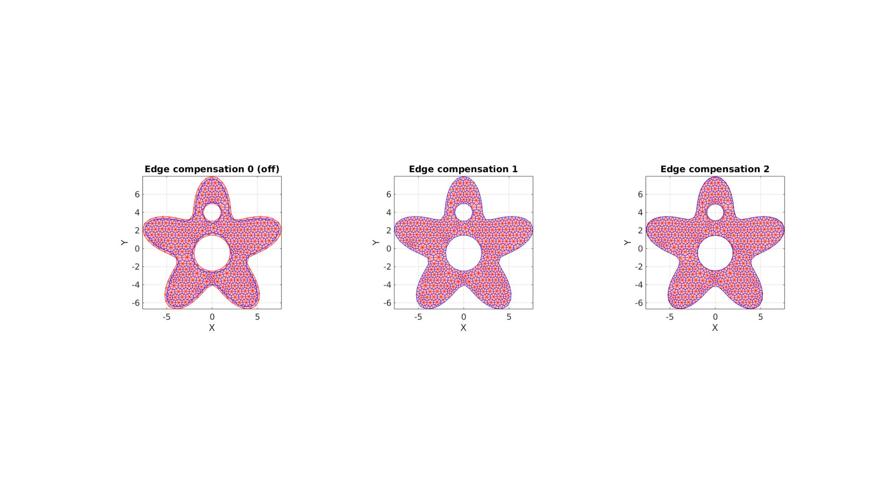

patch_dual
Below is a demonstration of the features of the patch_dual function
Contents
Syntax
[Vd,Fd,Fds]=patch_dual(V,F);
Description
Computes the dual of the input tesselation defined by the vertices V and faces F.
Examples
clear; close all; clc;
Plot settings
fontSize=15; plotColor1=0.25.*ones(1,3); plotColor2=0.75.*ones(1,3); edgeWidth=2; markerSize=25; cMap=gjet(250);
Example 1: Computing the dual of a surface triangulation
Creating example triangulation (circle filled triangle)
%Boundary and mesh parameters ns=50; %Number of points on outer boundary (defines how well the circle is sampled) rOut=2; %Outer radius of circular boundary pointSpacing=rOut/15; %Approximate initial point spacing for point seeding stdP=pointSpacing/2*ones(1,2); %Standard deviations for random point offset after point seeding %Creating boundary curve tt=linspace(0,2*pi,ns); tt=tt(1:end-1); r=rOut.*ones(size(tt)); [x,y] = pol2cart(tt,r); Vb=[x(:) y(:)]; %Create Delaunay derived mesh regionCell={Vb}; [F,V,~,DT]=regionTriMeshRand2D(regionCell,pointSpacing,stdP,1,0); V(:,3)=(sin(3*V(:,1))+sin(3*V(:,2)))/2; %Deriving the dual of the patch [Vd,Fd]=patch_dual(V,F);
%Plotting results cFigure; hold on; gpatch(F,V,V(:,3),plotColor1,0.9,edgeWidth); gpatch(Fd,Vd,'none',plotColor2,1,edgeWidth); axisGeom(gca,fontSize); camlight headlight; colormap(cMap); drawnow;
Example 2: Methods for handling the boundary
%Boundary 1 ns=150; t=linspace(0,2*pi,ns); t=t(1:end-1); r=6+2.*sin(5*t); [x,y] = pol2cart(t,r); V1=[x(:) y(:)]; %Boundary 2 [x,y] = pol2cart(t,ones(size(t))); V2=[x(:) y(:)+4]; %Boundary 3 [x,y] = pol2cart(t,2*ones(size(t))); V3=[x(:) y(:)-0.5]; %Meshing the region pointSpacing=0.75; %Desired point spacing [F,V]=regionTriMesh2D({V1,V2,V3},pointSpacing,1,0);
Deriving the dual of the patch while treating boundary using three different methods.
fixBoundaryOption=0; [Vd0,Fd0]=patch_dual(V,F,fixBoundaryOption); fixBoundaryOption=1; [Vd1,Fd1]=patch_dual(V,F,fixBoundaryOption); fixBoundaryOption=2; [Vd2,Fd2]=patch_dual(V,F,fixBoundaryOption);
%Plotting results cFigure; subplot(1,3,1); hold on; title('Edge compensation 0 (off)'); gpatch(F,V,'rw','r',0.5); gpatch(Fd0,Vd0,'none','b',1); axisGeom(gca,fontSize); colormap(cMap); view(2); subplot(1,3,2); hold on; title('Edge compensation 1'); gpatch(F,V,'rw','r',0.5); gpatch(Fd1,Vd1,'none','b',1); axisGeom(gca,fontSize); view(2); subplot(1,3,3); hold on; title('Edge compensation 2'); gpatch(F,V,'rw','r',0.5); gpatch(Fd2,Vd2,'none','b',1); axisGeom(gca,fontSize); view(2); drawnow;
Example 3: The "Buckminster Fuller" dome triangulation and its dual
The patch_dual function assumes that a valid and appropriate dual exists for the input patch data specified by F and V (faces and vertices). If they are not appropriate the output may for instance not form an enclosing shape or output faces may not be planar.
%Defining geodesic dome triangulation r=1; %sphere radius n=3; %Refinements [F,V,~]=geoSphere(n,r); %Deriving the dual of the patch [Vd,Fd]=patch_dual(V,F); Ad=patchArea(Fd,Vd);
%Plotting results cFigure; hold on; % gpatch(F,V,'none','w',1,0.5); % plotV(V,'k.','MarkerSize',markerSize); gpatch(Fd,Vd,Ad,'k',1,edgeWidth); % plotV(Vd,'k.','MarkerSize',markerSize); axisGeom(gca,fontSize); axisGeom(gca,fontSize); camlight headlight; colormap(cMap); colorbar; drawnow;
Example 4: Bunny
%Defining geodesic dome triangulation [F,V]=stanford_bunny; %Deriving the dual of the patch [Vd,Fd]=patch_dual(V,F);
%Plotting results cFigure; hold on; gpatch(F,V,'none','r',1,edgeWidth); gpatch(Fd,Vd,'w','b',0.9,edgeWidth); % patchNormPlot(Fd,Vd); axisGeom(gca,fontSize); camlight headlight; drawnow;

GIBBON www.gibboncode.org
Kevin Mattheus Moerman, gibbon.toolbox@gmail.com
GIBBON footer text
License: https://github.com/gibbonCode/GIBBON/blob/master/LICENSE
GIBBON: The Geometry and Image-based Bioengineering add-On. A toolbox for image segmentation, image-based modeling, meshing, and finite element analysis.
Copyright (C) 2006-2023 Kevin Mattheus Moerman and the GIBBON contributors
This program is free software: you can redistribute it and/or modify it under the terms of the GNU General Public License as published by the Free Software Foundation, either version 3 of the License, or (at your option) any later version.
This program is distributed in the hope that it will be useful, but WITHOUT ANY WARRANTY; without even the implied warranty of MERCHANTABILITY or FITNESS FOR A PARTICULAR PURPOSE. See the GNU General Public License for more details.
You should have received a copy of the GNU General Public License along with this program. If not, see http://www.gnu.org/licenses/.